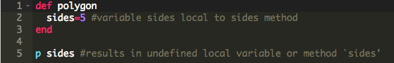
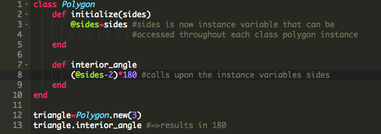
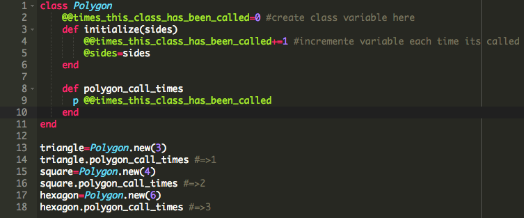
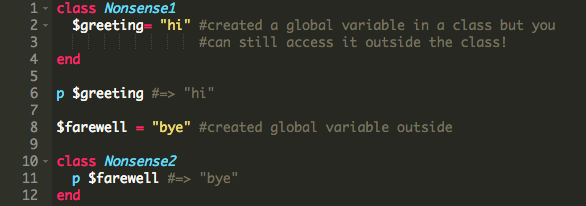
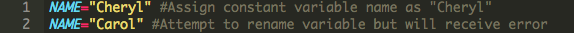

Ruby Variables and Their Scope
How to Use Different Ruby Variables!
by Lawrence Yu
Posted on February 21, 2015

This week’s technical blog entry will cover the different types of variables that exist in ruby and their scope. In Ruby, there are five types of variables you can use: local, instance, class, global, and constant. Let’s begin with local variables. Local variables are your normal variables without any symbols at the beginning of it. For example name = ”Pam”. Local variables are only available in the context it was created in. If the name variable was created inside a method, then calling it outside the method will result in an error since it does not exist outside the method:
Now moving on to the next type of variables, we have instance variables. Instance variables are variables with an @ sign in front of the name: @name = ”Lana". One normally uses instance variables when they want a variable to be available to all methods within an instance of a class. For example, if I created a class Polygon, which takes the number of sides and calculates the interior angle, you might want to have an instance variable “sides” so that another method can use it.
The next type of variable is the class variable. Class variables are declared with double @ symbols in front of the variable name like so @@name = ”Ray” but created outside of methods. Class variables behave exactly like instance variables but are also accessible to all instance of the class it was created from. Typically programmers avoid using class variables because you do not want other class instances to have too much access to it. Of course there are times you may want to use class variable, say for example you wanted to see how many times you used a certain class.
The fourth type of variable is the global variable. Global variables are declared with the $ symbol: $name = "Malory". Global variables like the name suggest means they are accessible anywhere and everywhere. Similar to class variable, one should avoid using global variables.
The last type of variable ruby supports are constant variabless. A constant variable is created by naming your variable in all capital letters: NAME = "Archer". When constant variables are declared outside of a class, they behave almost identically to global variables, and when they are declared inside of a class, they are most like class variables. The main difference about constant variables though is that if you tried to overwrite a constant variable, ruby will throw an error on your console when you try to run your code.
Well that covers all the variables in ruby and their scope. I hope my explanation of the different variables were sufficient in helping you better understand them. See you next week where we start learning Javascript and SQL!
Previous Blog Entries
- How to Ask the Right Questions
- Sorting Out the Sorts!
- Past Conflicts
- Looping in JavaScript Vs Ruby!
- The Things I Value!
- Ruby Variable Types and Their Scope!
- Stereotype Threats
- Pairing and Feedback
- Classes Are In Session!
- Maintenance Headache!
- Ruby Enumerable:group_by
- My Thinking Style: Understanding and Learning
- Arrays Versus Hashes
- Introduction to CSS: Margin, Padding, and Borders
- Introduction to Version Control, Git, and GitHub
- My DBC Expectation